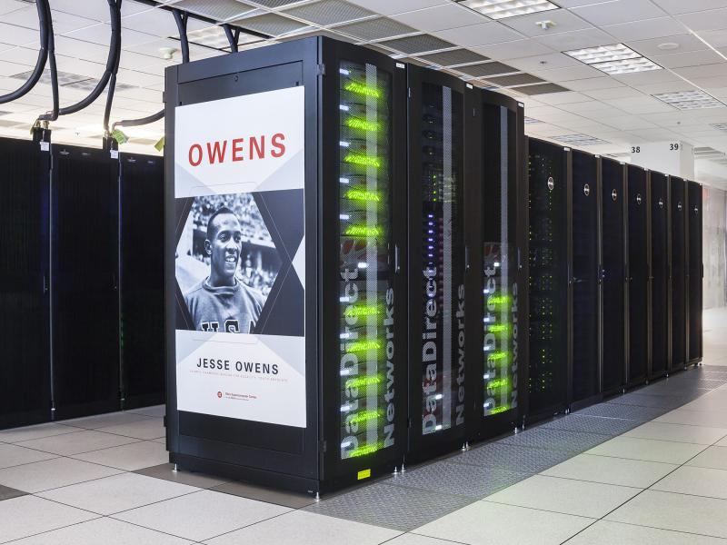
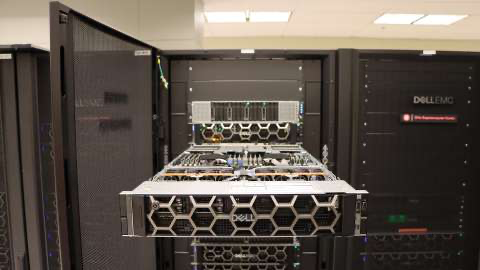
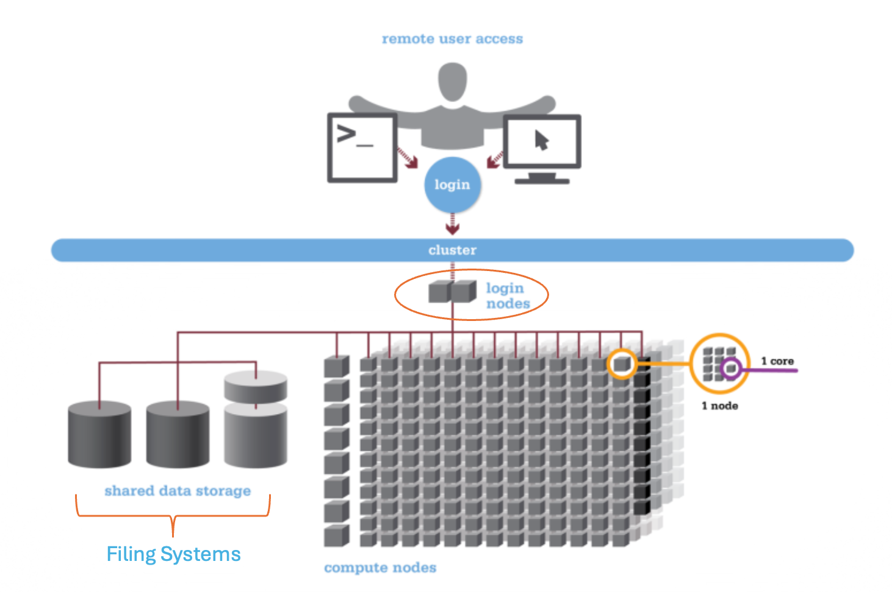
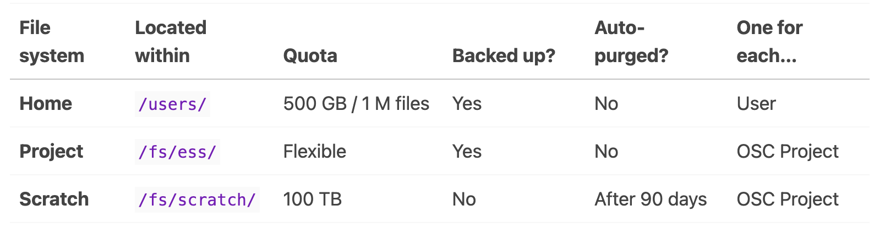
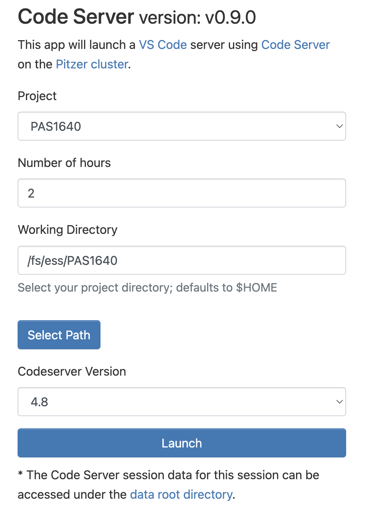
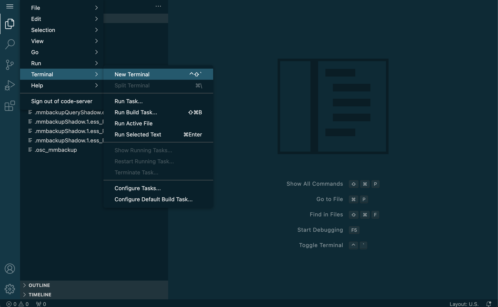
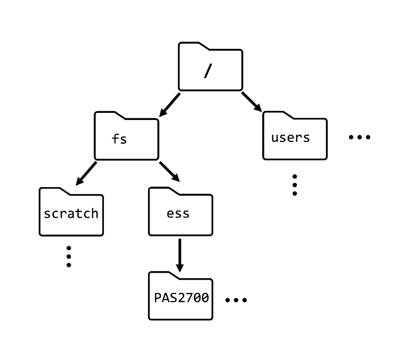
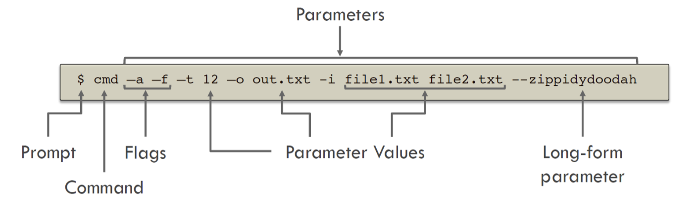

Lab Meeting 20240626 - CLI and OSC
Meeting objectives
- Learn how OSC is organized
- Log into OSC on demand and learn how to navigate code server
- Learn some basic UNIX commands
- Learn some best file organization practices within the OSC
- Create your own user directory within our OSC projectI’m not sure how far we’ll get, but by the end of these lab meetings my goal is to have you introduced to the idea of using software in the command line at OSC
Much of this is based directly on
- PLNTPTH 6193 - Practical Computing Skills for Omics Data taught by Jelmer Poelstra (which I highly reccomend)
- and a little from the COMS 2022 bioinformatics webinar series on HPC which can be found here
Intro to High Performance Computing and The Ohio Supercomputer

Supercomputer (aka a compute cluster or just a cluster): a group of many computers connected through a high speed network which can be accessed remotley
Why use the OSC?
- Need more computing power than your own can handles (RAM, CPUs, run time)
- e.g., when using large data sets
- Need to run many analysis
- Automation of analysis
Very often useful for Omics data
OSC Resources
- https://ondemand.osc.edu: A web portal to use OSC resources through your browser (login needed).
- https://my.osc.edu: Account and project management (login needed).
- https://osc.edu: General website with information about the supercomputers, installed software, and usage.
Access to OSC goes through projects
- Projects can be tied to a lab, class, research project, etc.
- Each project has its own budget in terms of compute hours and storage space
- Users can be part of multiple projectsOur lab’s project is PAS1640
OSC structure

Words to know when taking about supercomputers
- Supercomputer (aka “compute cluster” or just “cluster): a group of many computers connected through a high speed network
- (OSC has 2; “Owens” and “Pitzer”)
- Node: a single computer or server
- Core (aka processor/ CPU): a single unit that runs a set of instructions
OSC Organization

- File Systems: Where files are stored - this is shared between OSC systems
- Login Nodes: a few “lower powered” computers that everyone shares after logging in
- Compute Nodes: The computers used to run analysis (e.g., slurm batch scripts)
OSC Filing system
Many directories where files are stored, all with different storage, speed, and back-ups

- Home (
/users/) : These are your files only for you. Is backed up - Project (
/fs/ess/) : Shared location for project. Is backed up - Scratch (
/fs/scratch/): Stores large input/ output files, is faster than Home or Project. Is NOT backed up.
Lets get computing
Steps
- log in
- interactive apps -> servers -> Code Server
- fill in the following parameters

- in code server, select the hamburger menu
- terminal -> new terminal

UNIX crash (bash?) course
OSC uses UNIX (linux like)
- **Command line** : the interface where you type commands
- **Terminal** : the program that can run the shell
- **Shell** : The command line interface to your computer (the kernel)
- **Unix shell** : a type of shell that uses unix
- **Bash** : the Unix language that is most commonUnix structure
Unix organization uses a hierarchical directory - often abbreviated to dir
- Root: the start of the directory (
/) - Path: the location of directories
- e.g., /fs/ess/PAS1640/aaron/

BASH Commands
Instead of clicking on things to run them such as in a graphical user interface (GUI), command line requires, well, commands to do anything

UNIX comes with lots of commands (similar to functions in R or Python), but lets start out slow
Baby’s first command: pwd
Lets start with an easy and useful command - pwd which prints the working directory
Type it into the terminal, press enter and see what happens
pwd/fs/ess/PAS1640Essentially what is happening is we give some input and the output is printed onto the screen which is the default for most UNIX commands
Command with arguments: cal
Here is another easy example of a command in CLI - cal
cal June 2024
Su Mo Tu We Th Fr Sa
1
2 3 4 5 6 7 8
9 10 11 12 13 14 15
16 17 18 19 20 21 22
23 24 25 26 27 28 29
30Type in, press enter, get a calendar printed out
But we can modify what this command does with arguments
Arguments (also sometimes called flags) come after a command and are preceded by a dash (-) and most often are a single letter
With the -j argument using cal we can get printed the Julian calendar instead
cal -j June 2024
Sun Mon Tue Wed Thu Fri Sat
153
154 155 156 157 158 159 160
161 162 163 164 165 166 167
168 169 170 171 172 173 174
175 176 177 178 179 180 181
182Getting help with -h
Most commands have multiple arguments, some of which are required for the command to work. We can usually check what a command does and what its arguments are with the -h argument
Let’s try it with cal
cal -hUsage:
cal [options] [[[day] month] year]
Options:
-1, --one show only current month (default)
-3, --three show previous, current and next month
-s, --sunday Sunday as first day of week
-m, --monday Monday as first day of week
-j, --julian output Julian dates
-y, --year show whole current year
-V, --version display version information and exit
-h, --help display this help text and exitFrom this we can see cal has a lot of different options. Just for funsies lets look at using the -3 which prints three monts AND the -j argument simultainiously
here, we put the arguments next to each other in any order
cal -3 -j May 2024 June 2024 July 2024
Sun Mon Tue Wed Thu Fri Sat Sun Mon Tue Wed Thu Fri Sat Sun Mon Tue Wed Thu Fri Sat
122 123 124 125 153 183 184 185 186 187 188
126 127 128 129 130 131 132 154 155 156 157 158 159 160 189 190 191 192 193 194 195
133 134 135 136 137 138 139 161 162 163 164 165 166 167 196 197 198 199 200 201 202
140 141 142 143 144 145 146 168 169 170 171 172 173 174 203 204 205 206 207 208 209
147 148 149 150 151 152 175 176 177 178 179 180 181 210 211 212 213
182 Arguments can also be passed after the same dash
cal -3j May 2024 June 2024 July 2024
Sun Mon Tue Wed Thu Fri Sat Sun Mon Tue Wed Thu Fri Sat Sun Mon Tue Wed Thu Fri Sat
122 123 124 125 153 183 184 185 186 187 188
126 127 128 129 130 131 132 154 155 156 157 158 159 160 189 190 191 192 193 194 195
133 134 135 136 137 138 139 161 162 163 164 165 166 167 196 197 198 199 200 201 202
140 141 142 143 144 145 146 168 169 170 171 172 173 174 203 204 205 206 207 208 209
147 148 149 150 151 152 175 176 177 178 179 180 181 210 211 212 213
182 Arguments can (but not always) be written out following two preceding dashes (–)
e.g., -h can be specified out with --help
depending on the command, it can require the spelled out or the shortened form, but most basic commands should have both available
Commands I really need you to know
Commands that do stuff: cd
So far the commands we have used only print something to the screen
Many commands perform some type of action though, such as cd which allows us to change our current working dir
lets first see where we are again
pwd/fs/ess/PAS1640cd takes a dir as an argument and takes us from our current wd to whatever dir we specify
lets use cd to get to the auspiciously named practice_location/
cd practice_location/tab
instead of spelling out the full input everytime, you can use tab to autocomplete a line
try typing cd p and then pressing tab to try
If there are multple dir/ files with the start, double tapping tab will give a list of files that begin with what you have typed so far so you can select which you want to go to
pwd/fs/ess/PAS1640/practice_locationand now we can move around!
Here we also used relative paths - because practice_location was only one level below, we only had to type out /practice_location and not the absolute dir /fs/ess/PAS1640/practice_location. It is good to get into the habbit of using relative paths instead of absolute ones in case we move anything around.
every dir has a few hidden directories that are useful to get around
.: is the dir of your current dir..: is the dir directly above you
to go back a level, use cd ..
if we want to go further into the dir, we can spell out the whole dir to get to the level_3 dir
cd level_1/level_2/level_3/lets check
pwdand to get back out, we can use ..
cd ../../../../Making directories with mkdir
mkdir takes a dir as an argument and creates it if one does not already exist
for practice, lets navigate to the users folder and make our own folder!
Get to the \users dir without me showing you!!
Solution (click here)
from within \PAS1640
cd \usersMaking your own dir
Within the \users dir we can make our own directories!!
call it whatever you want, but I personally recommend using
mkdir $USERWhile I’m skipping a detailed explanation on variables, I’ll quickly mention them here
in UNIX, variables are kept in objects beginning with a dollar sign ($)
there are a few default ones such as
- $HOME : stores the name of the home dir
- $USER : stores the name of the user
to see what a variable contains, try the echo function
# this is a general example, don't run it
echo$<VARIABLE>echo$USERcp - copy paste
cp takes two files as arguments, copying the first to the second
e.g.,
```bash cp